Last dimension | Dimension = 2 | Next dimension
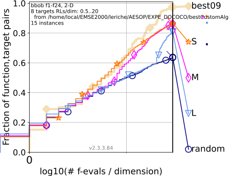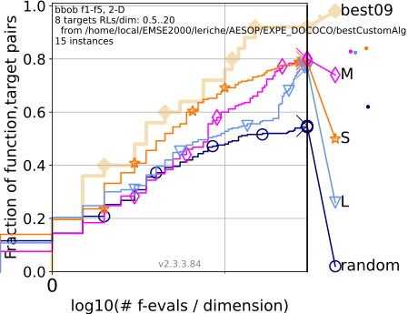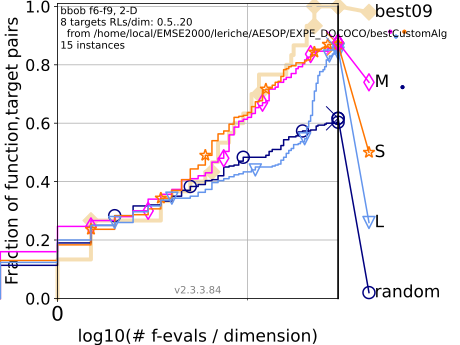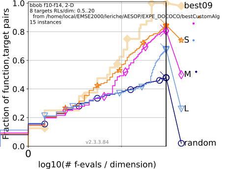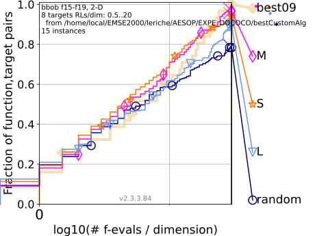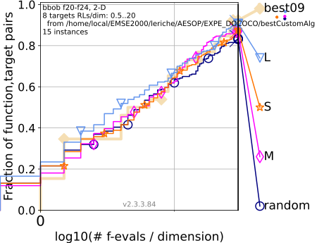Previous dimension | Dimension = 3 | Next dimension
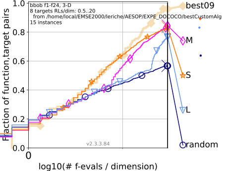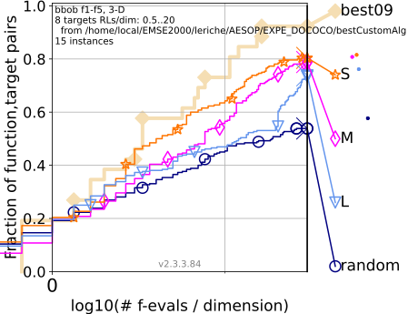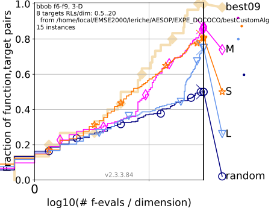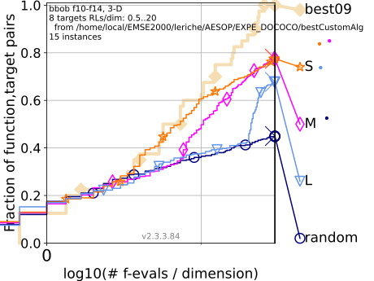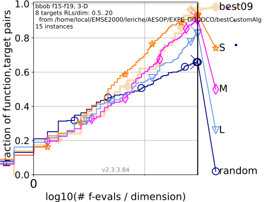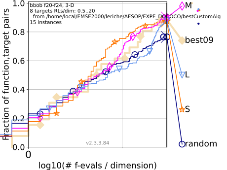Previous dimension | Dimension = 5 | Next dimension
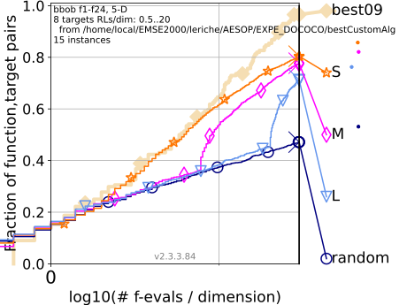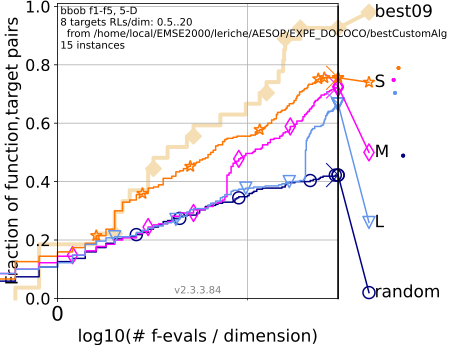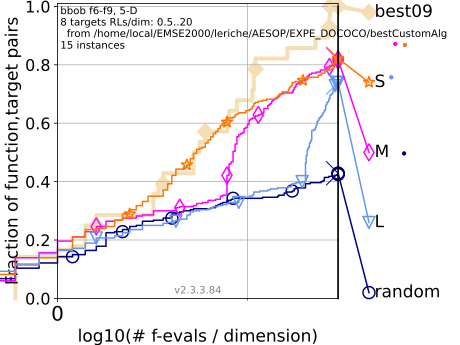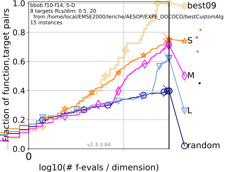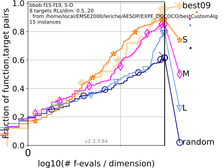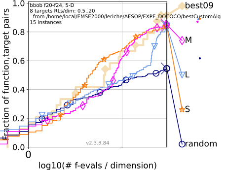Previous dimension | Dimension = 10 | First dimension
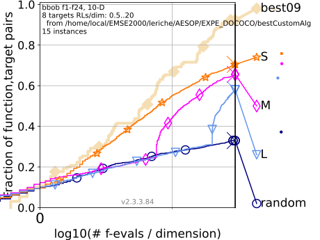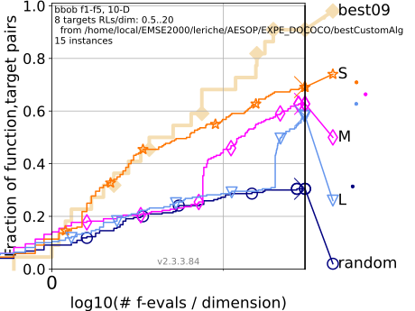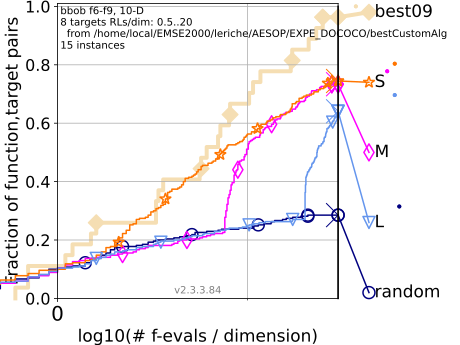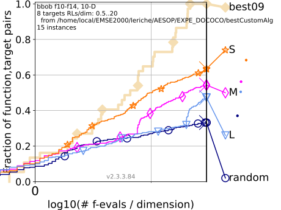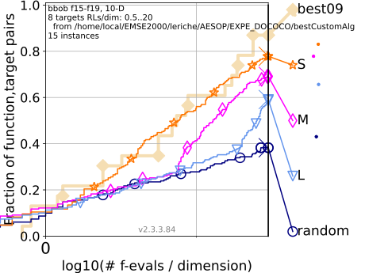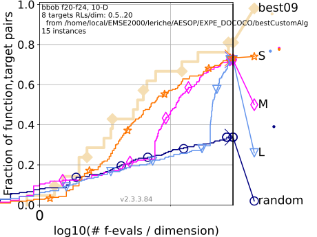 Bootstrapped empirical cumulative distribution of the number of objective function evaluations divided by dimension (FEvals/DIM) for all functions and subgroups in different dimensions. The targets are chosen from $10^{[−8..2]}$ such that the reference algorithm just not reached them within a given budget of k × DIM, with 8 different values of k chosen equidistant in logscale within the interval {0.5, ..., 50}. As reference algorithm, the reference algorithm is shown as light thick line with diamond markers.